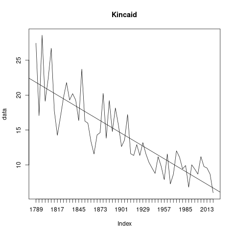

US Inaugural Address Reading Level
What does the graph of the (Kincaid) reading level of the US inaugural addresses look like?
Like this!

As we can see, the reading level has decreased steadily. And to some, this may seem like a sign of declining intelligence of our presidents. But realistically, the general population does not read at the 30th grade level! Biden comes in at 6.02, with a level of comprehension for the common person.
Here are the numbers that are generated by the fathom program:
# Chars Words Complex Sentences SylW WpS FOG Flesch Kincaid Name
1 8606 1429 20.15 24 1.68 59.54 31.88 4.37 27.44 1789-Washington
2 785 135 21.48 4 1.65 33.75 22.09 32.83 17.06 1793-Washington
3 13850 2318 19.33 37 1.67 62.65 32.79 1.75 28.58 1797-Adams
4 10121 1726 15.35 41 1.55 42.10 22.98 32.99 19.12 1801-Jefferson
5 12879 2166 16.99 44 1.59 49.23 26.49 22.27 22.38 1805-Jefferson
6 6988 1175 18.38 20 1.64 58.75 30.85 8.17 26.71 1809-Madison
7 7136 1210 17.19 33 1.61 36.67 21.54 33.07 17.76 1813-Madison
8 19846 3370 17.27 122 1.62 27.62 17.96 42.11 14.25 1817-Monroe
9 26273 4455 16.92 127 1.59 35.08 20.80 36.76 16.85 1821-Monroe
10 17719 2915 20.00 74 1.68 39.39 23.76 24.50 19.63 1825-Adams
11 6794 1128 20.57 25 1.68 45.12 26.27 19.14 21.80 1829-Jackson
12 7041 1176 19.81 30 1.66 39.20 23.61 26.48 19.30 1833-Jackson
13 23380 3839 20.58 94 1.68 40.84 24.57 22.89 20.21 1837-VanBuren
14 49651 8405 18.35 209 1.63 40.22 23.42 28.42 19.29 1841-Harrison
15 28657 4798 18.82 151 1.66 31.77 20.24 34.42 16.35 1845-Polk
16 6586 1088 20.86 22 1.70 49.45 28.13 13.10 23.72 1849-Taylor
17 20051 3332 18.01 104 1.64 32.04 20.02 35.43 16.28 1853-Pierce
18 16773 2822 16.90 89 1.63 31.71 19.44 36.99 15.98 1857-Buchanan
19 20942 3628 16.46 138 1.59 26.29 17.10 46.00 13.37 1861-Lincoln
20 3917 697 11.05 27 1.45 25.81 14.74 58.16 11.56 1865-Lincoln
21 6474 1123 15.58 39 1.58 28.79 17.75 43.82 14.30 1869-Grant
22 7701 1336 13.40 44 1.56 30.36 17.50 44.24 14.63 1873-Grant
23 14885 2478 18.32 59 1.65 42.00 24.13 24.71 20.25 1877-Hayes
24 17690 2971 16.63 112 1.62 26.53 17.26 43.14 13.83 1881-Garfield
25 10110 1681 20.46 43 1.66 39.09 23.82 26.89 19.22 1885-Cleveland
26 26110 4382 18.23 157 1.65 27.91 18.46 38.79 14.78 1889-Harrison
27 12298 2014 20.11 57 1.69 35.33 22.18 27.82 18.16 1893-Cleveland
28 23624 3959 17.88 130 1.65 30.45 19.33 36.73 15.70 1897-McKinley
29 13385 2202 19.35 100 1.66 22.02 16.55 43.75 12.63 1901-McKinley
30 5561 984 11.99 33 1.49 29.82 16.72 50.79 13.58 1905-Roosevelt
31 32079 5424 18.81 158 1.65 34.33 21.25 32.74 17.22 1909-Taft
32 9542 1699 12.65 68 1.48 24.99 15.06 56.29 11.61 1913-Wilson
33 8362 1529 11.05 60 1.44 25.48 14.61 59.02 11.36 1917-Wilson
34 20228 3327 18.58 149 1.68 22.33 16.36 42.28 12.91 1921-Harding
35 23899 4055 17.44 197 1.60 20.58 15.21 50.27 11.36 1925-Coolidge
36 21671 3558 19.17 156 1.69 22.81 16.79 41.07 13.20 1929-Hoover
37 10849 1880 14.84 84 1.56 22.38 14.89 52.00 11.57 1933-Roosevelt
38 10534 1806 14.78 96 1.58 18.81 13.44 54.33 10.36 1937-Roosevelt
39 7496 1331 12.62 68 1.48 19.57 12.88 61.37 9.56 1941-Roosevelt
40 3005 553 8.32 26 1.36 21.27 11.83 69.90 8.79 1945-Roosevelt
41 13538 2267 16.28 115 1.62 19.71 14.40 50.02 11.18 1949-Truman
42 13850 2443 12.24 123 1.49 19.86 12.84 60.21 9.80 1953-Eisenhower
43 9111 1655 8.22 92 1.40 17.99 10.48 70.44 7.90 1957-Eisenhower
44 7565 1359 10.23 52 1.44 26.13 14.55 58.67 11.57 1961-Kennedy
45 8118 1483 9.84 91 1.40 16.30 10.46 71.87 7.28 1965-Johnson
46 11471 2117 9.87 106 1.40 19.97 11.94 68.44 8.68 1969-Nixon
47 9890 1795 11.42 68 1.47 26.40 15.13 55.90 12.02 1973-Nixon
48 6824 1219 13.45 53 1.50 23.00 14.58 56.28 11.12 1977-Carter
49 13655 2427 13.19 128 1.49 18.96 12.86 61.16 9.44 1981-Reagan
50 14475 2551 12.31 125 1.49 20.41 13.09 60.30 9.92 1985-Reagan
51 12463 2309 8.62 143 1.37 16.15 9.91 74.92 6.82 1989-Bush
52 9078 1597 13.53 80 1.51 19.96 13.40 58.75 10.02 1993-Clinton
53 12182 2148 12.52 112 1.48 19.18 12.68 61.85 9.40 1997-Clinton
54 8953 1579 13.55 97 1.52 16.28 11.93 61.72 8.69 2001-Bush
55 11978 2070 14.54 94 1.54 22.02 14.62 54.03 11.19 2005-Bush
56 13368 2390 10.00 111 1.44 21.53 12.61 63.39 9.77 2009-Obama
57 12306 2115 12.06 111 1.50 19.05 12.44 60.46 9.56 2013-Obama
58 8287 1436 14.07 89 1.52 16.13 12.08 61.50 8.69 2017-Trump
59 13883 2513 10.74 205 1.43 12.26 9.20 73.74 6.02 2021-Biden
And here is the compressed zip file of all the US inaugural addresses.
And here is the R code that creates the graph above:
abplot <- function (data, title) {
years <- seq(1789, 2021, by = 4)
plot(data, type='l', main = title, xaxt = 'n')
axis(1, 1 : length(years), years)
abline(lsfit(1 : length(data), data))
}
data <- read.csv('~/tmp/USIA-fathom-stats.txt', header=T, sep="\t")
abplot(data$Kincaid, 'Kincaid')